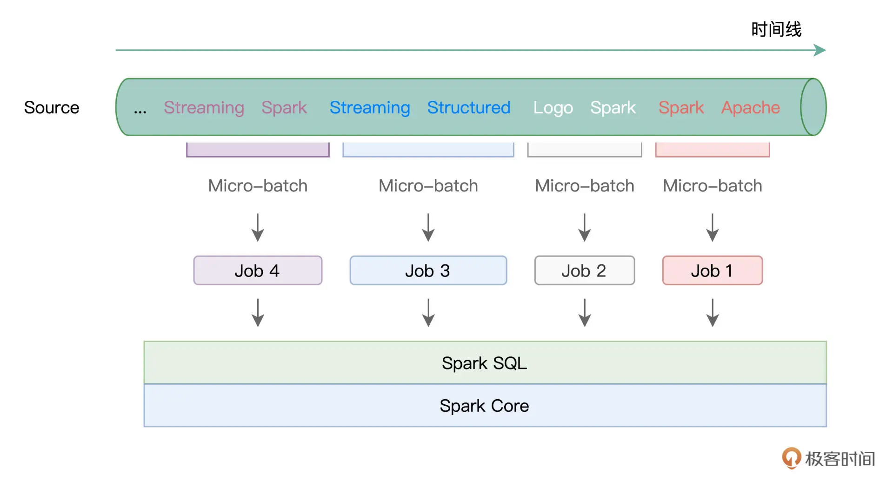
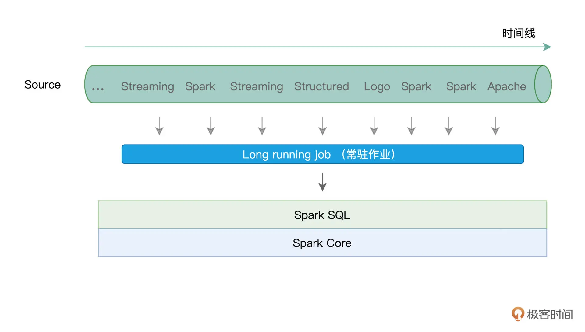

Batch mode 和 Continuous mode¶
Note
Structured Streaming 有 Batch mode 和 Continuous mode 这两种计算模型和 4 种 Trigger 机制。
Batch mode 吞吐量大、延迟高（秒级）。
Continuous mode 吞吐量低、延迟也更低（毫秒级）。
Trgger 机制¶
当数据像水流一样，源源不断地流进 Structured Streaming 引擎的时候，引擎并不会自动地依次消费并处理这些数据，它需要一种叫做 Trigger 的机制，来触发数据在引擎中的计算。
Structured Streaming 支持 4 种 Trigger，它们所基于的计算模型和含义如下：

Batch mode¶
所谓 Batch mode，它指的是 Spark 将连续的数据流，切割为离散的数据微批进行处理。
形象一点说，Batch mode 就像是“抽刀断水”，两刀之间的水量，就是一个 Micro-batch。而每一份 Micro-batch，都会触发一个 Spark Job，最终交由 Spark SQL 与 Spark Core 去做优化与执行。

在 Default Trigger 下，Spark 会根据数据流的流入速率，自行决定切割粒度，无需开发者关心。
Fixed interval Trigger 明确定义了 Micro-batch 切割的时间周期。
而 One-time Trigger 会一次性处理所有数据流。
Continuous mode¶
Continuous mode 以事件/消息为粒度，用连续的方式来处理数据。这里的事件或消息，指的是原始数据流中最细粒度的数据形式，它可以是一个单词、一行文本，或是一个画面帧。
在 Continuous mode 下，Structured Streaming 使用一个常驻作业来处理数据流（或者说服务）中的每一条消息。

容错机制¶
所谓容错，它指的是，在计算过程中出现错误的时候，流处理引擎有能力恢复被中断的计算过程，同时保证数据上的不重不漏。
Batch mode 利用 Checkpoint 机制来实现容错。在实际处理数据流中的 Micro-batch 之前，Checkpoint 机制会把该 Micro-batch 的元信息全部存储到开发者指定的文件系统路径。这样一来，当出现作业或是任务失败时，引擎只需要读取这些事先记录好的元信息，就可以恢复被中段的计算。
# 指定 Checkpoint 存储地址的代码示例
.option("checkpointLocation", "path/to/HDFS")
Spark 为 Continuous mode 下的容错引入了 Epoch Marker 机制：
writeStream.trigger(continuous = "1 second")
上面的代码中，Structured Streaming 每隔 1 秒，就会安插一个 Epoch Marker，而两个 Epoch Marker 之间的数据，就称为一个 Epoch。
在引擎处理并交付数据的过程中，每当遇到 Epoch Marker 的时候，引擎都会把对应 Epoch 中最后一条消息的 Offset 写入日志，从而实现容错。